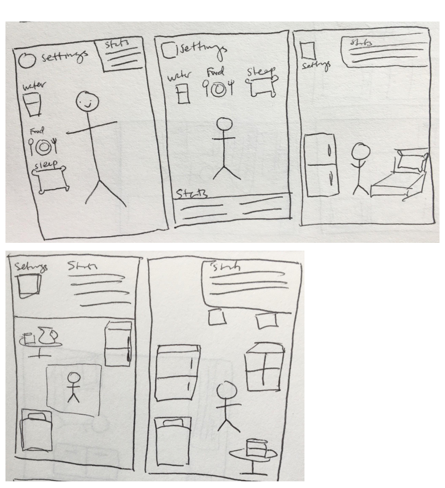
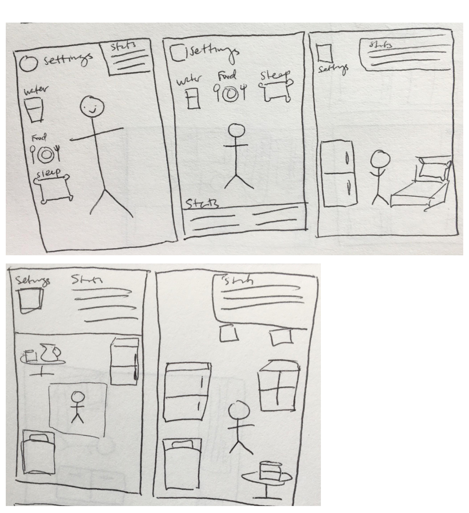
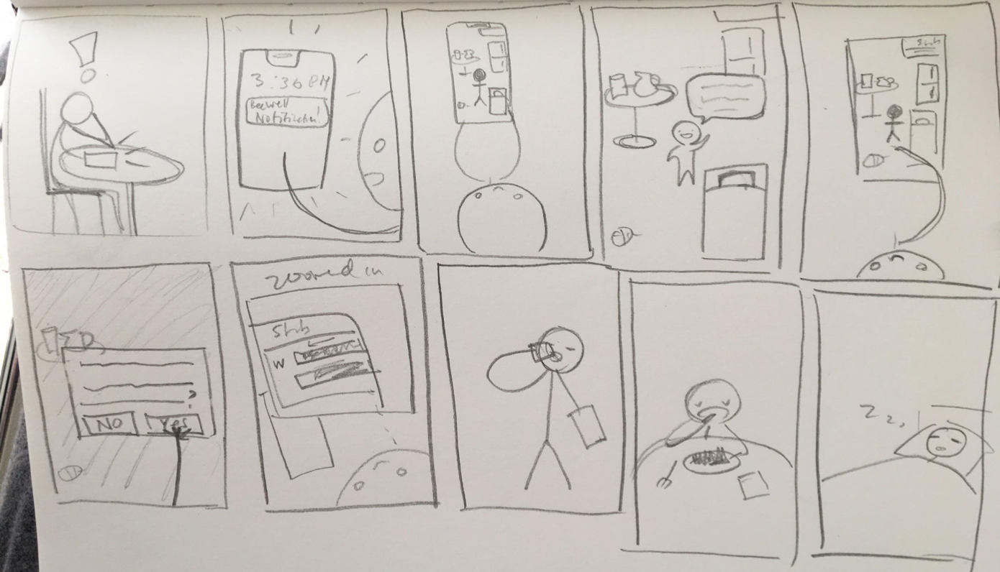
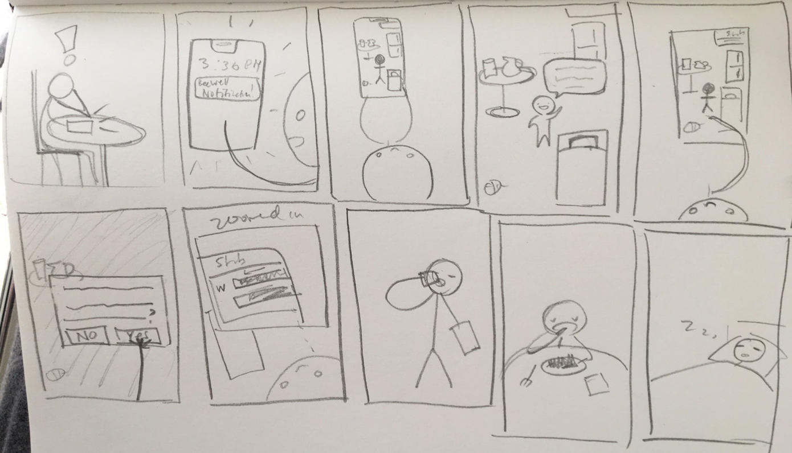
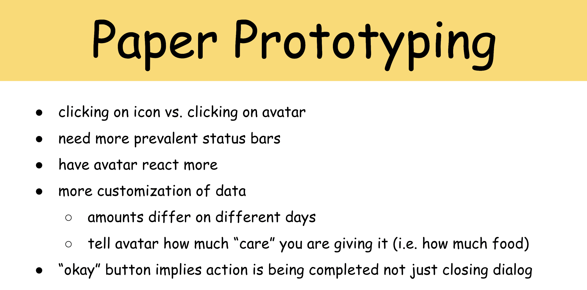

Goal
Based on the given brief: To design and build an application that can run
on a desktop browser.
My team's idea: To create a mobile app that would help our target audience (young adults) maintain a healthier lifestyle.
My team's idea: To create a mobile app that would help our target audience (young adults) maintain a healthier lifestyle.
Tools
JavaScript, HTML, CSS, PowerPoint, Pen and Paper (Prototypes)
Project Proposal
For the final project of my undergraduate Human Computer Interaction class,
a partner and I had to develop an application of our choice. After some
brainstorming, we, as young adults who rarely slept, skipped meals, and drank
coffee instead of water, decided to create an app that would help young
adults just like us take better care of themselves. However, we wanted to
create something that went beyond just offering basic reminders to eat,
sleep, and drink water. We proposed a more engaging and motivational experience
that would have users take care of an avatar, who acted as an extension of
the user, to remind them to also care for themselves. Our process is detailed
below, but
the final prototype can be found here on Github. The following are
some quick sketches I made to help us get the basics of our idea across
for our proposal.


Conceptual Design
After submitting our project proposal, we created Metaphors and
Scenarios for the User and for our main tasks of Sleeping, Eating, and
Drinking Water. We then separately found our visual inspiration and had
a meeting to discuss where we saw this design going, focusing on where our
ideas overlapped as well as any points we each felt were important. This
allowed us to move forward on the same page.


Sketches and Storyboarding
Because of the smaller scope of this project as well as our more specific
target audience, we created only a Primary Persona. We then developed our
Scenarios, empathizing with that persona, and used those deliverables as
inspiration as we explored potential ideas by each sketching a proposed
layout for our most important screen (i.e. where the user gives their avatar
food, water, and tells it to sleep).
 

We then worked together to combine our ideas into one to create screens for
The Studio Apartment, showing a confirmation pop-up and displaying a generic
dialogue box as we knew those would evolve into core features. We also developed
a rough storyboard showcasing how our app could successfully remind someone
to care for an avatar and themselves as a way of "selling" our idea and its
effectiveness to our professor.
 

Paper Prototyping and Low-Fidelity Testing
With a clearer idea of our screens and core features, we created paper prototypes
and split up to perform in-person, moderated, Think Aloud tests with potential
users. Because of our tight timeline, and considering the minimalist functionality
associated with this app, using low-fidelity prototypes were an effective
and efficient way of testing out our initial ideas.


Before performing these tests, we created tasks to cover our key functionalities:
1. Move through the welcome form screens, enter values for how much sleep you want to get and how much food and water you want to eat and drink.
2. Give your avatar water.
3. Change the number of hours of sleep you want to get to 9 hours.
4. Feed your avatar.
We each took notes during testing and reconvened to, together, establish the following key takeaways:
1. Move through the welcome form screens, enter values for how much sleep you want to get and how much food and water you want to eat and drink.
2. Give your avatar water.
3. Change the number of hours of sleep you want to get to 9 hours.
4. Feed your avatar.
We each took notes during testing and reconvened to, together, establish the following key takeaways:

High-Fidelity, Clickable Prototype
As we were approaching our final round of testing, we felt it would be beneficial
to have users be able to interact with a more finished product on an actual phone.
As our focus was on users' needs, we took the feedback from our initial testing
to make changes as we created a high-fidelity prototype. As required by the
course, we had to make this prototype accessible via a web browser (and not
using prototyping software such as Figma), so we coded it in JavaScript,
HTML, and CSS.
Heuristic Evaluations and User Testing
In order to iteratively improve our product, we performed more user tests as
well as heuristic evaluations (the "experts" were our peers from the course
which meant we were also able to act as "experts" and perform heuristic evaluations
for other apps). From these tests and evaluations, we prioritized our results
and made changes to our high-fidelity prototype. The severity of our issues
was mainly determined by frequency, criticality, and ease of use. However,
when actually making changes, we did have to consider our deadline and weigh
how long it would take to make a change with that change's overall impact.
We also took note of positives to make sure that any adjustments we did make
did not impact what users liked about our app.


Final Product
After iteratively improving our application, we ended with
our final prototype which can be explored in your browser
or can be viewed below via the demo video we created.